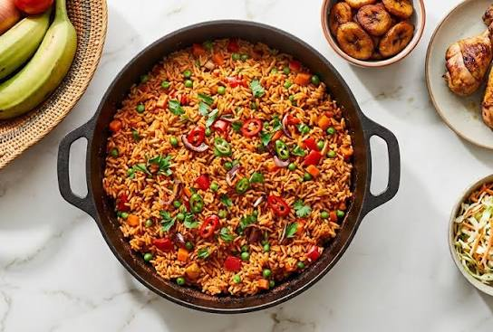

Jollof Rice
Home

Description
Jollof rice is a legendary, one-pot West African dish celebrated for its vibrant orange-red color
and deeply smoky flavor profile. Long-grain parboiled rice is slow-simmered in a rich, spiced tomato
and pepper reduction infused with onions, garlic, ginger, thyme, and bay leaves. Typically cooked
over an open fire or a high flame to create a prized, slightly charred bottom layer, it serves
as the ultimate festive centerpiece across the region.
Ingredients
- Parboiled Long-Grain Rice: Ideally golden sella basmati or long-grain parboiled rice.
- The Pepper Mix: Fresh tomatoes, red bell peppers (tatashe), scotch bonnets (ata rodo), and onions.
- Tomato Paste: Concentrated tomato puree to enrich the color and deepen the base flavor.
- Vegetable Oil: For frying the tomato paste and pepper sauce base.
- Meat Stock: Rich beef or chicken broth used as the primary cooking liquid for the rice.
- Aromatics & Herbs: Sliced onions, fresh garlic, minced ginger, dried thyme, and dried bay leaves.
- Seasonings: Curry powder, bouillon cubes (e.g., Maggi or Knorr), white pepper, and salt.
- Butter & Fresh Tomatoes: Sliced fresh tomatoes and a knob of butter added at the very
end for extra richness and shine.
Steps
- Blend the pepper mix containing fresh tomatoes, red bell peppers, scotch bonnets,
and one onion until completely smooth.
- Boil the blended mixture in a pot over medium-high heat for 10 to 15 minutes to
reduce the water content.
- Heat the vegetable oil in a large, heavy-bottomed pot and sauté sliced onions
until translucent and fragrant.
- Fry the tomato paste in the hot oil for about 5 minutes, stirring constantly until
it loses its sour taste and darkens slightly.
- Pour in the reduced pepper mix and fry the base for 15 to 20 minutes until the oil
separates and rises to the top.
- Season the fried sauce base with curry powder, dried thyme, bay leaves, minced garlic,
ginger, bouillon cubes, and salt.
- Add the rich meat stock to the pot, stir thoroughly, and bring the entire seasoned
liquid base to a rolling boil.
- Wash the parboiled rice thoroughly with warm water until the water runs clear,
then drain it completely.
- Stir the washed rice into the boiling pot, ensuring the liquid sits just slightly
above the surface of the rice grains.
- Cover the pot tightly with a sheet of aluminum foil and a secure lid, then simmer
on very low heat for 30 minutes until the rice is tender, trapping the steam to
create the signature smoky flavor.